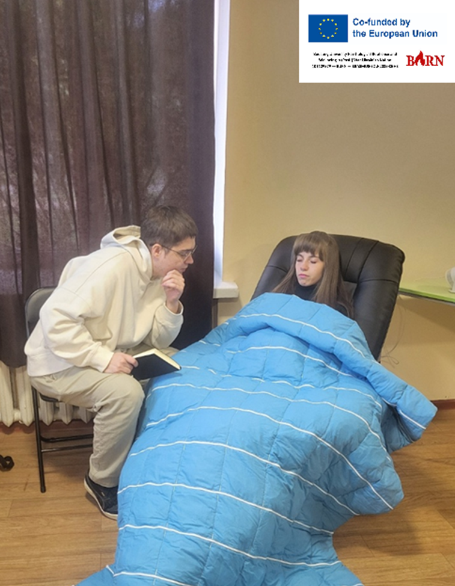
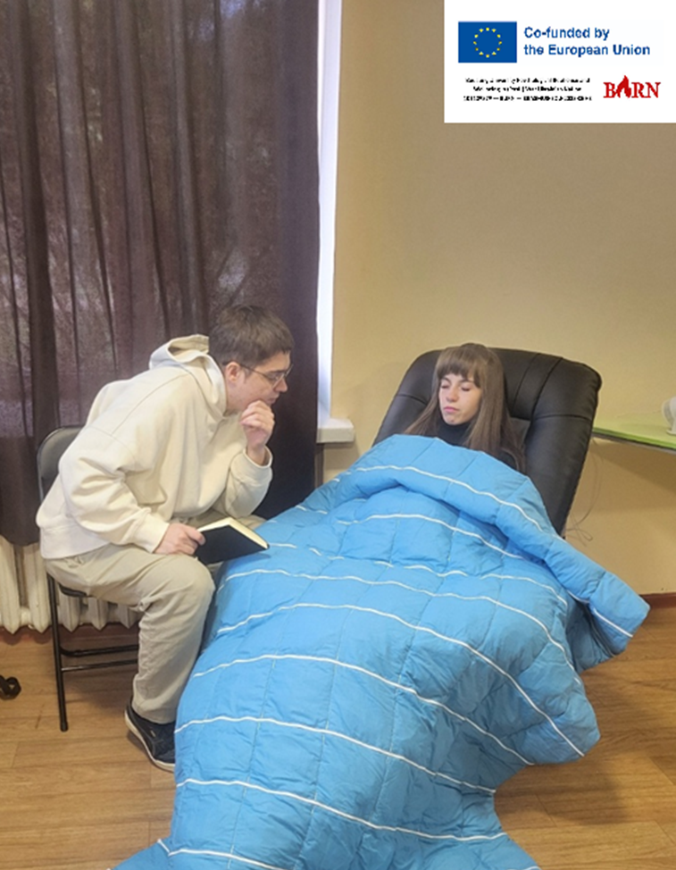
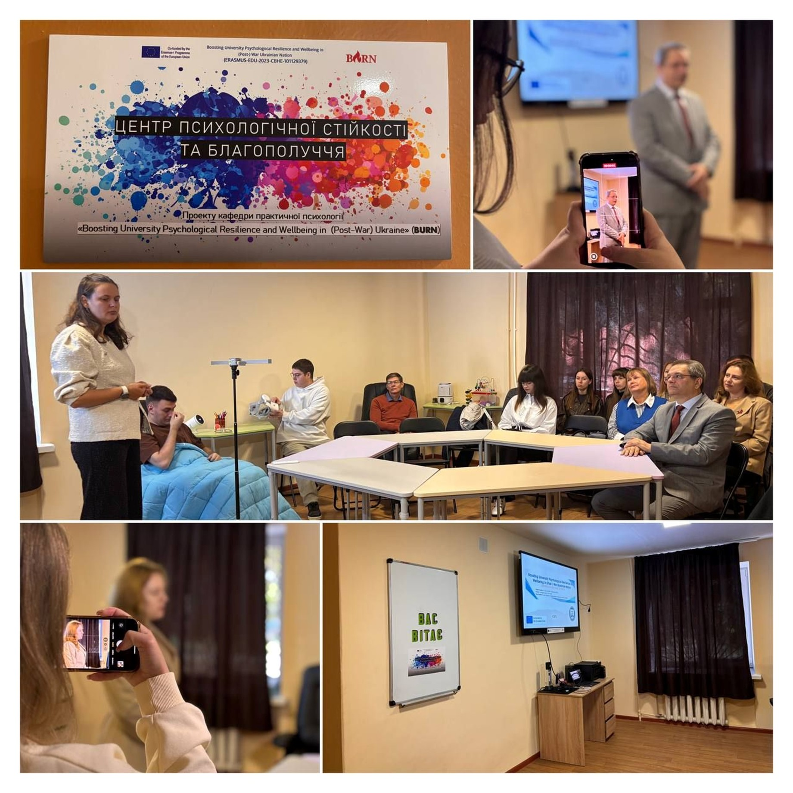

Center for Psychological Resilience and Wellbeing at KDPU
The Center for Psychological Resilience and Wellbeing at Kryvyi Rih State Pedagogical University, opened on 29 September 2025 within the Erasmus+ KA2 project BURN, operates as an institutional and regional hub for psychological support, training, and applied research. Established by the Department of Practical Psychology in partnership with universities from Latvia, Estonia, and Germany, the Center integrates international standards, evidence-based methodologies, and modern technical resources to strengthen mental health services in wartime and post-war conditions.
The Center’s core activities are structured around three interconnected functions. First, it provides direct psychological support to students, academic staff, local residents, military personnel, and civilians. Services include individual consultations, stabilization sessions, psychoeducation, and access to specialized equipment such as relaxation chairs, weighted blankets, and light-therapy devices aimed at reducing physiological tension and improving sensory regulation.
Second, the Center delivers structured professional training. It conducts seminars and programmes for municipal psychological services, including practitioners from preschool, school, and vocational institutions, as well as specialists from military units and the State Emergency Service. These activities are grounded in trauma-informed principles and reflect current European approaches to crisis response and mental-health promotion.
Third, the Center plays a key role in the professional formation of future psychologists. New educational modules have been introduced across bachelor’s, master’s, and doctoral programmes. A central element is the supervised internship for master’s students, presented by Center psychologist Tetiana Shevchenko. Supervisions, delivered in collaboration with academic experts, allow students to analyse complex counseling cases, practice interviewing and intervention design, receive structured feedback, and develop self-regulation skills essential for long-term professional resilience. Students also engage in practical work: participating in consultations, supporting intake processes, contributing to case discussions, and assisting ongoing Center projects through interview transcription, thematic analysis, and preparation of psychocorrective recommendations.
Through these combined functions — service provision, professional training, and applied educational practice — the Center ensures high-quality psychological support and contributes to developing a sustainable, competence-based mental-health ecosystem for the university and the wider community.
 

The Center employs specialists from the Departments of Psychology, Developmental Psychology and Counseling, as well
as practicing psychologists who provide a wide range of psychological services, including individual and group
counseling, support for individuals who have experienced traumatic events, and supervisory and peer supervision for
psychological service professionals.
Educational activities are also a priority and include conducting educational and socio-psychological
training sessions, seminars, master classes, and surveys, as well as implementing programs aimed at developing
resilience and emotional wellbeing.
For the further information about the Center, visit Кафедра практичної психології - Проєкт BURN — КДПУ
